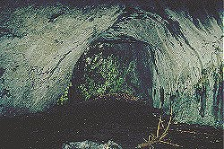

| In Deutsch |
| In Deutsch |
Maximiliansgrotte - Windloch
Maximilian's Grotto - Windhole
 |
| Image: the steep path down into the biggest chamber called Leissnerdom. |
Useful Information
| Location: | A9 exit Pegnitz, B85 10km towards Auerbach, turn right towards Rann and Krottensee 15km, 1km from Neuhaus-Krottensee. 45km NE Nürnberg. (58,Md51) |
| Open: | APR-OCT Tue-Sat 10-17, tours on the full hour, Sun 9-18. |
| Fee: | Adults EUR 2,40, Children EUR 1,60. Groups (20+): Adults EUR 2,10, Children EUR 1,30. |
| Classification: |
|
| Light: | electric |
| Dimension: | L=1700m, VR=70m, A=500m asl |
| Guided tours: | L=700m, D=30min, V=20,000/a [200?]. |
| Photography: | |
| Accessibility: | |
| Bibliography: |
(1967):
Die nördliche Frankenalb - ihre Geologie, ihre Höhlen und Karsterscheinungen,
2. Band: Die Höhlen des Karstgebietes A Königstein,
Jahreshefte für Karst- und Höhlenkunde des Verbandes der deutschen Höhlen- und
Karstforscher e.V. München, München, 1967, pp. 28ff
|
| Address: |
Verwaltung der Maximiliansgrotte, Familie Lohner, Grottenhof, 91284 Neuhaus a. d. Pegnitz, Tel: +49-9156-434, Fax: +49-9156-232.
E-mail: |
| As far as we know this information was accurate when it was published (see years in brackets), but may have changed since then. Please check rates and details directly with the companies in question if you need more recent info. | |
| Last update: | $Date: 2015/11/20 13:16:56 $ |
History
| 1596 | Windloch (Wind Hole) first time mentioned. | |
| 1597 | first exploration of the cave on the search for gold. | |
| 1703 | after a battle on the 24-MAY, 28 casualties were thrown into the Windloch. | |
| 1833 | a insane woman falls into the cave and is rescued after five days. | |
| 1852 | exploration and opening of the modern entrance. Renamed into Deutsche Douglashöhle (German Douglas Cave). | |
| 1853 | opened for the public. | |
| 1878 | start of guided tours. | |
| 1901 | discovery of the Großer See (Great Lake). | |
| 1926 | additional development works and opening of the current cave exit. | |
| 1994 | electric light. |
Description
 |
| Image: a nice formation in a side passage. |
The old entrance of the Maximiliansgrotte is the so called Windloch (Wind Hole), a 27m deep pit, which was formed by the caving in of the Leissnerdom. Until 1852 the cave was called Windloch am Zinnberg. Then it was renamed several times, first to Deutsche Douglashöhle, then to Wunderhöhle or Wundershöhle (Wonder Cave). The final name Maximiliansgrotte was given to the cave to honor King Max II. of Bavaria. But the locals still call it Krottenseer Höhle (Cave of Krottensee).
The most impressive speleothem of the cave is the Eisberg (Iceberg), a stalagmite 6m high and 3m wide. But the cave has numerous speleothems including Helictites and Moonmilk.
During excavatios, potsherds from the Hallstatt age and remains of human bones were found. The bones were much younger and were from soldiers which died in the War of the Spanish Succession (1701-1714) in the battle at Krottensee on 24-MAY-1703. After the battle the corpses were thrown into the Windloch.
|  |
|---|
| Image: the nearby Vogelherdhöhle. |
The parking of the cave, located in the forest near Krottensee, is the start of several karst trails. The trails lead to caves, dolines and rock formations in the area.
Most impressive is the huge Vogelherdhöhle. This big through cave is the last remain of a cave system, which obviously had impressive dimensions.
Another sight is the Steinerne Stadt (Rock City) which is 1.5km fom the parking. This is the eroded remains of a coral reef. The nearby Weissingkuppe also shows impressive doloite rock formation. Outstanding is a huge rock with a diameter of at least 5m, which stands on a foot of only 80cm diameter!
 Karst Trail Neuhaus/Pegnitz
Karst Trail Neuhaus/Pegnitz Search Google for "Maximiliansgrotte"
Search Google for "Maximiliansgrotte" Google Earth Placemark
Google Earth Placemark Maximiliansgrotte,
official homepage.
(
Maximiliansgrotte,
official homepage.
({kind=link}